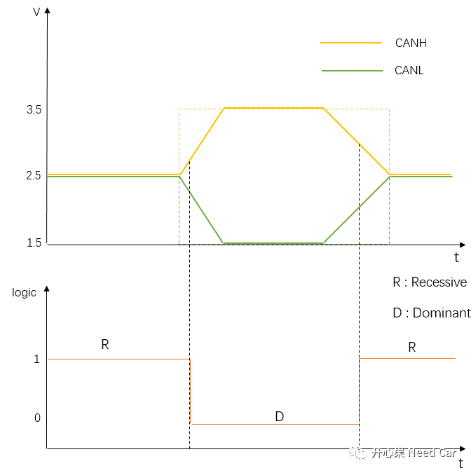
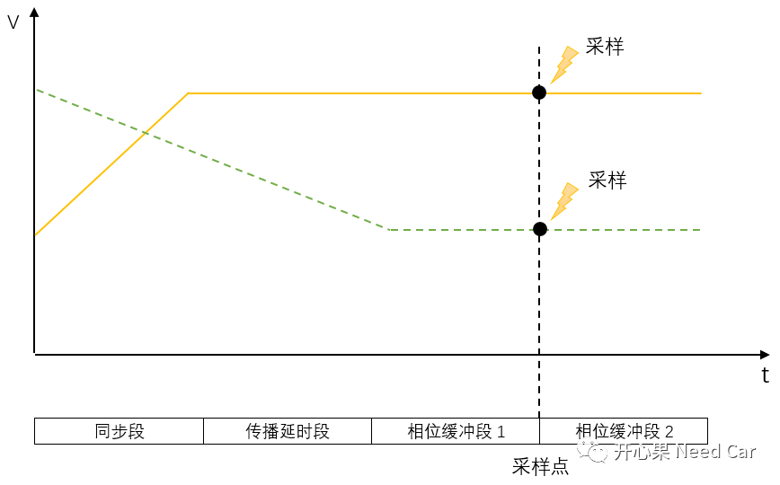
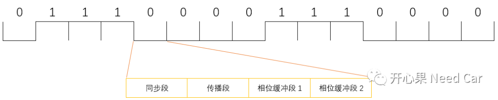

前言
采样点对于通信而言，重要性是不言而喻的，在数模信号的转换过程中，采样点不准将导致信息交互不可靠，进而影响整个系统的稳定和可靠。本文将分析一下CAN总线的采样点问题。在信号的转换过程中，将总线上的模拟信号转换成数字信号并不是理想的转换过程，而是存在一定时间的延迟。
以高速CAN为例，如上图，CANH或者CANL上电压变化时并不是理想的变化状态（橘黄色、绿色虚线），而是存在一定的斜率，CANH或者CANL上电压从开始改变到达到稳定状态需要一定的时间，而此时间参数具体是多少需要参考芯片手册，不同芯片参数可能不同，此时间参数是多少具有不确定性，由实验测试给出（手册中体现）。电压从低到高或者从高到低，达到稳定的时间是不一致的，也就是说两种电压切换方式是不对称变化。如果在电压变化过程中采样，CANH和CANL上的压差还不稳定，将可能造成采样数据不准，因此在数模转换过程中，为确保获取可靠数据，定义了采样点，即在一个相对稳定的位置进行采样。采样点是针对位(Bit)的一个概念，具体说：获取一个逻辑0/1依赖于在一段时间（一个Bit时间）内某个点的总线压差值。
如上图所示，如果CANH/CANL上电压由低到高（橘黄色线）或者由高到低（绿色虚线）在稳定的阶段采样将获取一个可靠的采样数据，而这个可靠的点被称为采样点。
如上图所示，在总线上传输的数据信息，以位流的形式体现，一个Bit被划分为四个段：同步段、传播延时段、相位缓冲段1、相位缓冲段2。采样点在相位缓冲段1和相位缓冲段2之间，如果采样点在此时间（一个Bit时间）内相对稳定的点进行采样即可获得可靠的压差值，进而转换成预期的逻辑值。过早或者过晚采样，获取的数据可靠性将得不到保障。只有底层获取了可靠的逻辑值，上层算法的处理才能发挥其应有的功能特性。
一个Bit时间由CAN模块获取的时钟频率决定，一般项目中CAN模块的主频是80MHz，之后进行对应的分频获取预期的波特率。以CANFD为例，工程项目中多数使用500Kbps/2Mbps通信速率。为什么不能使用更高频率?个人理解：前面提到电压切换过程中，达到稳定需要一定的时间，如果速率过快则可能还未达到稳定状态即进行了数据的采样，因此获取的数据可靠性大打折扣。如果要使得电压切换过程更快的达到稳定，可能需要提升设备的物理特性，如使用传输延时更好的物理线束等。
如果定义一个Bit时间是80Tq(Bit时间中最小单元)，采样点75%，在配置工具里一般可以设置Prog=14,Seg1 = 45，Seg2 = 20，当然也可以设置其他参数，关于几个段的设置参数的大小关系可以参考对应的datasheet。采样点是物理层测试中不可缺少的测试环节，因此在开发过程中，需要严格按照需求设置各段的Tq值。